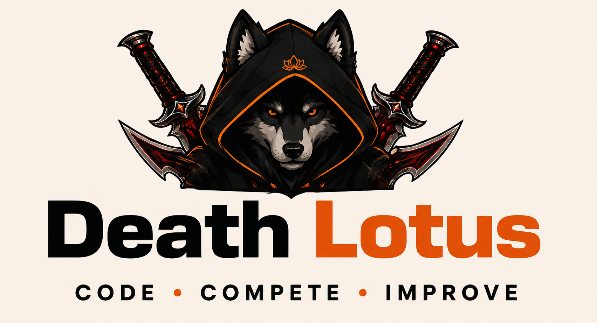

Graphic Design
Visual identity, logo systems, posters, flyers, and print layouts.
COURSEWORK EVIDENCE
GRAPHIC DESIGN • CREATIVE PORTFOLIO 2026
I'm Mark John Lucero — a Computer Science student exploring the space between visual design, technology, and creative problem-solving.
I'm a student designer with a foundation in Computer Science and a growing interest in visual communication.
I enjoy turning ideas into visual experiences — from building a brand identity to laying out print materials and exploring photography. My approach combines experimentation with structure: understand the purpose, find a clear direction, then refine the details.
Outside design, I’m developing my skills in programming and technology. My goal is to keep growing as a creative problem-solver who can work across both design and digital experiences.
A snapshot of the areas represented in my coursework and submitted projects. These are developing skills, not proficiency claims.
Visual identity, logo systems, posters, flyers, and print layouts.
COURSEWORK EVIDENCEComputer Science studies and interest in building useful digital products.
FIELD OF STUDYOrganizing information through composition, hierarchy, and editorial layout.
COURSEWORK EVIDENCEExploring image-making and personal editorial presentation.
MIDTERM ACTIVITYA related area of study within my technology-focused learning.
LEARNING INTERESTCombining design thinking and technology to communicate ideas.
ONGOING DEVELOPMENTA collection of available activities from the supplied semester archive.
Finals promotional video submitted in the supplied archive.
Watch on YouTube ↗The supplied ZIP includes Prelim and Midterm artwork plus one Finals promotional video. No additional Finals graphic-design image outputs were present in the archive. Original PDF files are linked from each project preview.
For questions, collaborations, or feedback about my work, feel free to reach me through email or phone.
Email me for inquiries and collaboration. You can also call or message me using the number above.